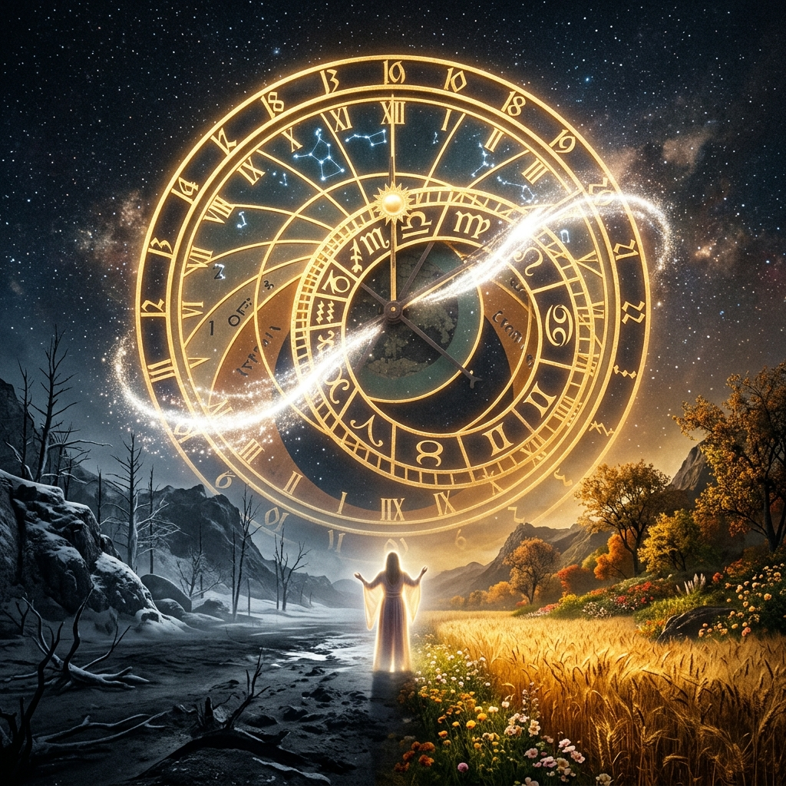

Understanding The Rhythm of God
TIMES &
SEASONS
Chronos vs Kairos
God does not operate in chronological time alone. He administers grace, assignments, and acceleration in *Kairos*—the specific, divinely orchestrated appointed time that compresses years into moments.
⏳ The Problem With The Clock
"Is the right time actually coming? Or is 'waiting' just the name we give to seasons where nothing is happening?"
Chronos is sequential time. It is the time on your clock, measurable and continuous. It does not speed up because you are in a hurry. Kairos is a different category entirely. It is appointed time.
Many believers are frustrated because they are measuring their progress in Chronos—counting years—while God is working in Kairos.
WHY SEASONS EXIST
Seasons are God's refusal to let you be a fast-grown tree. If a person is placed in a position of immense power before character formation has taken place, the exposure will not elevate them—it will destroy them.
🗺 The Architecture of Timing
Click or tap any node to reveal the deep insight behind it.
THE PROGRESSIVE PIPELINE
INDICATORS OF TRANSITION
🧩 The Illusion of Success
THE SEASON OF INCREASE
During a season of ease, you assume your methods are correct. You settle into an assumption that erodes the hunger you had before the ease arrived. You don't realize some of that success is the season—not your skill.
When the season shifts, methods that appeared to be working are exposed as insufficient. The surplus is meant for construction, not consumption.
THE ANT AND THE SCARCITY
The Season of Pressure
An unprepared season of pressure will consume what was accumulated during increase, leaving you in destitution. This is why you must not make destiny decisions from a position of desperation during the winter. You survive it by drawing from the spiritual and relational reserves you built when you had the luxury of time.
📡 Season Identification Simulator
Examine the atmospheric clues in your current life to determine your exact spiritual coordinate. Which of these environments best describes you right now?
Environmental Audit
Select the reality that feels most accurate to your day-to-day.
Season Discovered
Result text.
🔓 The Transition Checklist
Before a transition officially executes in the spirit, you must not abort it through emotional panicking. Verify your posture:
1. Stop the Panic
Acknowledge that closed doors are forced departures, not abandonment.
2. Reject Offense
Refuse to carry bitterness against God because of a prolonged season of delay.
3. Feed The Hunger
Lean into the sudden desire to pray and fast—it is the fuel for the coming threshold.
🪞 The Reframe
Your Kairos is not late.
It is waiting for you to become worthy of it.
The hard season stops feeling like a closed case. It becomes a curriculum. The distance between where you are now and where that moment is waiting for you is not made up of arbitrary years of divine inattention.
It is made up of you. The character being formed in you. The death to self being accomplished in you.
🔥 The Closing Declaration
THE KAIROS OATH
"I submit to the process of God. I will not measure my Kingdom progress by a Chronos clock. I will use my season of increase to build, and I will endure my season of pressure without offense."